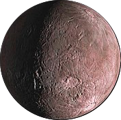

50000 Quaoar
Facts
- 50000 Quaoar, provisional designation 2002 LM60, is a non-resonant trans-Neptunian object (cubewano) and a possible dwarf planet in the Kuiper belt, a region of icy planetesimals beyond Neptune.
- It measures approximately 1,100 km (680 mi) in diameter, which is about half the diameter of Pluto.
- A small amount of methane is present on its surface, which can only be retained by the largest Kuiper belt objects.
- In 2004, signs of crystalline ice were found on Quaoar, indicating that the temperature rose to at least 110 K (−163 °C) sometime in the last ten million years.
History
- Discovered by Chad Trujillo, Michael Brown.
- Discovered in 002 Jun 05 10:48:08.
- In February 2007, Weywot, a synchronous minor-planet moon in orbit around Quaoar, was discovered by Brown. Weywot is measured to be 80 km (50 mi) across. Both objects were named after mythological figures from the Native American Tongva people in Southern California. Quaoar is the Tongva creator deity and Weywot is his son.
- At the time of its discovery in 2002, Quaoar was the largest object found in the Solar System since the discovery of Pluto.
Highlights
- Satellites: Quaoar has one known moon, Weywot.
- Not that much things.
Precaution
- Life becomes quite difficult due to adverse conditions that occur during the transition of the seasons. There are special shelters for these situations.
- We offer a special sprey-product for scientists doing field studies outside the sterile area for safety.
- Don't forget your coat.